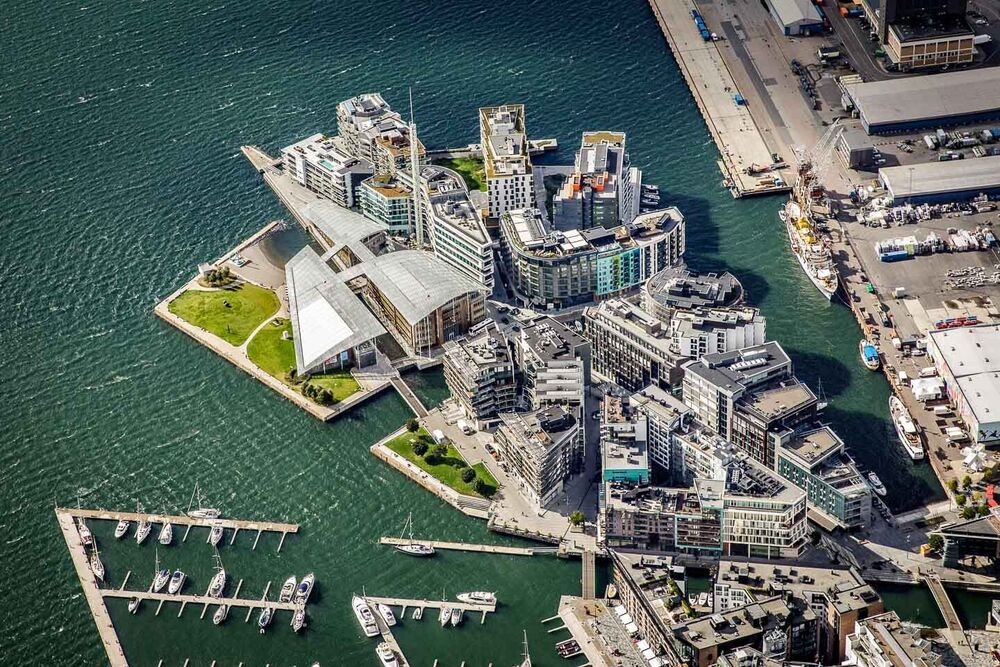
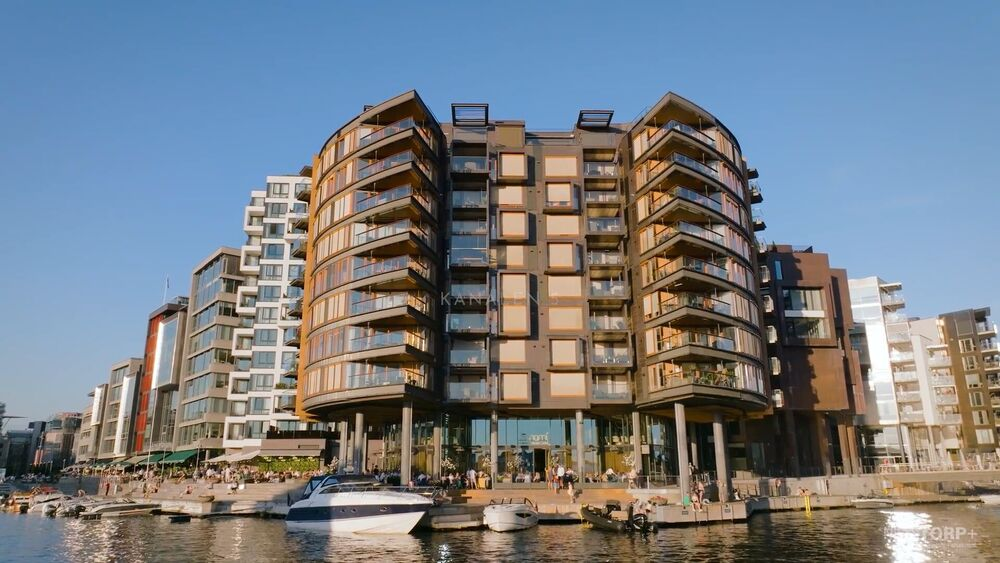
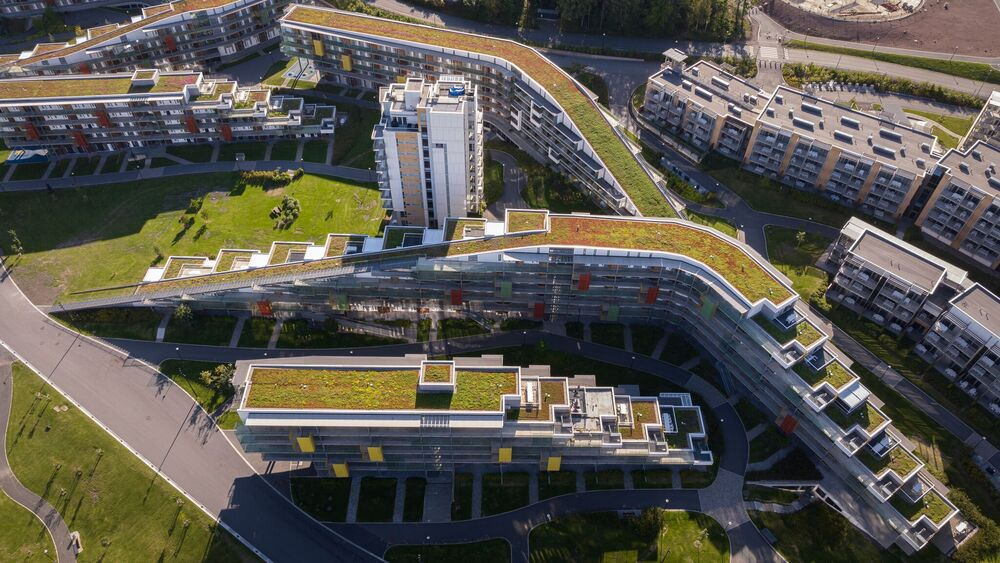

NIELSTORP+ arkitekter · Oslo and Tromsø, Norway
Architectural design true to place and context
NIELSTORP+ is a Norwegian practice working across architecture, interiors, landscape and urban planning. Since the 1980s we have completed headquarters, airports, hotels, housing and whole city districts in Norway and abroad, from Stockholm and London to Belfast and Shanghai.
The projects do not look alike, and that is the point. Our signature is not a shape or a material. It is the way each building grows out of its place: the climate and the terrain, how people have built and lived there, and the life we want the building to make possible. A new building does not have to look old to belong. It can wake associations, tell a local story, and still be uncompromisingly modern.
Context is not the opposite of character. Several of our buildings have become landmarks: the oval tower at Tjuvholmen in Oslo, The Edge on the quay in Tromsø. They are iconic because of where they stand, not in spite of it.
And a place belongs to the people who live there, too. Our hotels and resorts are planned so that locals still reach the shore and use the landscape, and so that the restaurant, the sauna and the square are open to everyone. Then guests meet the people of the place, not only other travellers.
Built
Completed projects
Oslo · Masterplan 2004 · Urban development
Tjuvholmen
A new district on reclaimed land in Oslo’s harbour, next to Aker Brygge. Freed from the historic street grid, the plan was shaped by the fjord, the sunlight and the view: two kilometres of public waterfront, a canal, bridges and squares of different scales, and building heights kept moderate so that Oslo’s hills still dominate the skyline.
NIELSTORP+ wrote the masterplan and designed several of the buildings, among them the office buildings at Tjuvholmen Allé 1-5 that form the gateway to the district, and the oval Kanalen 5 at the water’s edge.
- Client
- Tjuvholmen KS
- Size
- 83,000 m²
- Masterplan
- 2004
- Tjuvholmen Allé 1-5
- 2009 · 15,000 m²

Film · Tjuvholmen masterplan · 1 min 34 s


Oslo, Tjuvholmen · 2010 · Housing and commercial
Kanalen 5
The oval building at the tip of Tjuvholmen’s first zone. Eleven storeys, the two lowest set back; round concrete columns carry the residential rotunda out over the water and the promenade, and the top floor is pulled back to finish the form against the sky.
Restaurants on the quay, offices on the second floor and 92 apartments above, all with wide views of sea and sky. The clear shape gives the building a strong identity: a signature for Tjuvholmen seen from a distance.
- Client
- Aspelin Ramm / Selvaag
- Size
- 9,200 m²
- Completed
- 2010
- Apartments
- 92

Film · Kanalen 5 · 1 min 26 s


Tromsø · 2015 · Hotel
The Edge Hotel
An award-winning hotel on the quay in the centre of Tromsø, with the Arctic Cathedral across the strait as its strongest neighbour. The hotel is drawn back in the silhouette so the cathedral keeps its role as the landmark, and borrows its clean, sharp and modern form.
Wings set at angles to each other give the façade its breaks and open lounges to the view. At ground level the quay and the water are pulled into the building through a terraced foyer; lobby, reception and restaurant sit at street level, conference halls below, and ten floors of rooms lift the view to fjord and mountains.
- Client
- Aspelin Ramm / Pellerin AS
- Size
- 13,000 m²
- Rooms
- 290
- Completed
- 2015


Sandefjord · 2021-2022 · Conference centre, hotel and housing
Oslofjord Convention Center
With 130,000 m², Oslofjord Convention Center is one of Northern Europe’s largest course and conference centres: meeting rooms and halls of every size, a hotel and apartments with 9,000 beds, and a multi-purpose arena. The complex is organised as a village: dynamic buildings that rise out of the ground under green roofs, with park-like spaces and paths between them.
The 2022 extension to the conference centre, with its large glass façades and overhanging timber roof, forms a new festival square at the heart of the site.
- Client
- OCC / BCC · Oslofjord Property AS
- Size
- 130,000 m²
- Beds
- 9,000
- Conference extension
- 2022 · 5,800 m²

Film · Oslofjord Convention Center · 1 min 40 s


In progress
On the drawing board
Kvaløya, Tromsø · 2026 · Destination hotel
Buvika Hotell
A destination hotel on Kvaløya outside Tromsø, in a historic coastal landscape where sea, weather and terrain have always set the terms. Five slender buildings on columns, inspired by fishing villages, net-drying racks and quays, stand lightly in the terrain, linked by transparent glass bridges.
Every guest room is a corner room facing the sea; the slatted façade filters light, screens the rooms and heightens the sense of weather and season. Lobby, restaurant, conference rooms and spa gather around a sheltered courtyard that opens to the evening sun: a living room for guests and a meeting place for locals alike. Terraces, jetties and paths tie the hotel to the shore and the landscape around it.
- Client
- Arctic Sensation AS
- Size
- approx. 4,100 m²
- Status
- In design


Norway · Sketch project · Mountain hotel
Mountain lodge
A lodge in the mountains, with the ski trails at the door. Three floors of rooms lie behind a slatted timber façade under a long, low roof, so the building reads as a single line against the slopes.
At its heart a tall timber hall with a stone chimney opens to the view: a lounge and restaurant around the fire, an après-ski terrace in the sun, and a sheltered courtyard with fire pits where the trails come in. Service areas, parking and spa are set into the slope beneath.
- Status
- Sketch project


Oslo · In progress · Housing
Bryn
A slender residential tower with a façade of vertical fins in warm terracotta, set among lower blocks. At its foot a glazed pavilion and gardens open the ground floor to the surrounding neighbourhood.
- Status
- In design


Across Norway · Recent and ongoing
The wider spread
Housing, offices, villas and cabins, at every scale, each one shaped by where it stands.


Reference projects · Norway and abroad
Selected works since 1987
A selection of completed buildings and plans, from the first headquarters in Stockholm to the hotel now under way on Kvaløya.
- SAS HeadquartersStockholm, Sweden1987
- Aker BryggeOslo, Norway1989
- Vikingskipet, Olympic hallHamar, Norway1992
- Hestra ParkBorås, Sweden1993
- British Airways HeadquartersLondon, UK1998
- Tjuvholmen masterplanOslo, Norway2004
- BI Campus NydalenOslo, Norway2005
- The SoloistBelfast, Northern Ireland2010
- Kanalen 5Oslo, Norway2010
- The Edge HotelTromsø, Norway2015
- China Eastern Airlines HQShanghai, China2018
- Oslofjord Convention CenterSandefjord, Norway2022
- Buvika HotellKvaløya, Norway2026